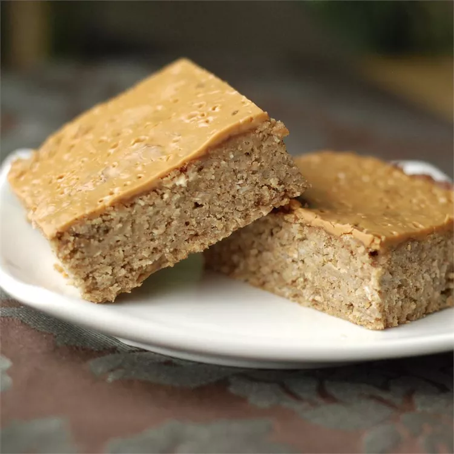

High-Protein Bar

The best, delicious and easiest protein bar that you'll ever taste.
A simple and easy to follow recipe of your favorite protein bar. Made with ingredients you can easily
find at your very home. With high fiber and protein content that will surely boost your energy.
Ingredients:
cooking spray
1 1/2 cups quick-cooking oats
1/4 cup wheat germ
1/4 cup ground flax seed
2 tablespoons vanilla-flavored hemp protein powder
1 teaspoon ground cinnamon
1/2 teaspoon salt
3 bananas
1/4 cup peanut butter
2 tablespoons honey
1 teaspoon vanilla extract
1/4 cup natural peanut butter, or to taste
Directions:
- Preheat oven to 375 degrees F (190 degrees C). Line an 8x8-inch baking dish with aluminum foil,
letting foil hang down over the sides of the pan; spray pan with cooking spray.
- Stir oats, wheat germ, flax seed, protein powder, cinnamon, and salt together in a bowl.
Mash bananas in a separate large bowl and stir 1/4 cup Jif® peanut butter, honey, and vanilla extract into bananas,
mixing well. Stir dry ingredients into banana mixture and spread into the prepared baking dish.
- Bake in the preheated oven for 20 minutes. Spread 1/4 cup natural peanut butter over top.
- Continue baking until lightly browned on the edges and set, 10 more minutes. Let cool in the pan and lift bars
onto a work surface using aluminum foil as handles. Cut into bars, wrap in plastic wrap, and store in refrigerator.
Cook's Note:
You can use any type of protein powder. Lower the amount of honey if you use a very sweet powder.
After they are cooled down, cut them into individual servings and cover with plastic wrap for a grab-and-go snack.